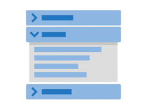
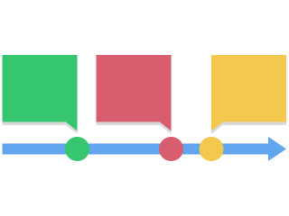
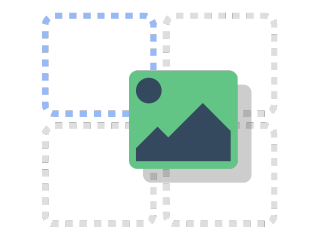
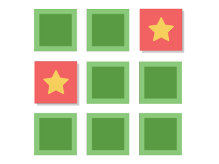

Comece pelo objetivo de aprendizagem. Os grupos indicam a finalidade predominante; um recurso pode atender a vários objetivos.
Selecione o nome de um recurso para abrir sua página oficial com descrição e demonstrações.
Apresentar e explorar
7 recursosOrganizar explicações, explorar imagens e estudar conteúdos multimídia.
| Recurso e demonstração | Facilidade de criação | Apresentação de informações | Prática e feedback | Avaliação da aprendizagem | Bloom: possibilidades | Exemplo pedagógico |
|---|---|---|---|---|---|---|
 Painéis expansíveisAccordion | Simples Títulos e textos. | Adequado Explicações em tópicos. | Não oferece diretamente Sem exercícios ou verificação de respostas. | Não oferece diretamente Requer atividade complementar. | Relembrar, compreender. | Apresentar conceitos de avaliação diagnóstica, formativa e somativa. |
| Pontos interativos na imagemImage Hotspots | Simples Imagem, pontos e informações. | Adequado Informações associadas a partes da imagem. | Condicional Exploração orientada, sem correção de respostas. | Não oferece diretamente Os pontos informativos não verificam aprendizagem. | Compreender, analisar. | Explorar espaços de uma escola e suas funções pedagógicas. |
 Linha do tempoTimeline | Intermediária Acontecimentos e mídias. | Adequado Organização cronológica. | Condicional Apoia tarefas de comparação e interpretação. | Não oferece diretamente Requer questões ou produção complementar. | Relembrar, compreender, analisar. | Explorar marcos da história da educação brasileira. |
| Comparação de imagensImage Juxtaposition | Simples Duas imagens e legendas. | Adequado Comparação por controle deslizante. | Condicional Observação guiada, sem correção automática. | Não oferece diretamente Requer registro das conclusões em outra atividade. | Compreender, analisar. | Comparar uma sala antes e depois de uma intervenção. |
| Apresentação interativaCourse Presentation | Intermediária Slides e interações. | Adequado Conteúdo organizado em slides. | Adequado Quando inclui exercícios e devolutivas. | Adequado Quando inclui questões avaliativas. | Compreender, aplicar, analisar. | Apresentar teorias da aprendizagem com situações para interpretação. |
| Livro interativoInteractive Book | Intermediária a complexa Páginas e atividades. | Adequado Conteúdo organizado em páginas. | Adequado Quando inclui exercícios. | Adequado Conforme as atividades inseridas. | Compreender, aplicar, analisar. | Criar uma unidade sobre planejamento pedagógico com leituras e exercícios. |
| Vídeo interativoInteractive Video | Intermediária Vídeo, perguntas e momentos de interação. | Adequado Explicações audiovisuais enriquecidas. | Adequado Perguntas e retomada de trechos. | Adequado Quando inclui questões avaliativas. | Compreender, aplicar, analisar. | Analisar uma situação de sala de aula com perguntas durante o vídeo. |
Praticar e revisar
7 recursosRecuperar informações, estabelecer associações e organizar sequências.
| Recurso e demonstração | Facilidade de criação | Apresentação de informações | Prática e feedback | Avaliação da aprendizagem | Bloom: possibilidades | Exemplo pedagógico |
|---|---|---|---|---|---|---|
| Cartões de estudoDialog Cards | Simples Frente e verso dos cartões. | Adequado Conceitos e explicações breves. | Adequado Revisão com revelação da resposta. | Condicional Autoavaliação: virar o cartão não comprova domínio. | Relembrar, compreender. | Revisar autores e conceitos de Psicologia da Aprendizagem. |
| Cartões com resposta digitadaFlashcards | Simples Perguntas e respostas esperadas. | Condicional Informações contextualizam a pergunta. | Adequado Resposta digitada com verificação. | Adequado Verifica respostas curtas previamente definidas. | Relembrar, compreender. | Identificar um conceito a partir de uma descrição ou imagem. |
 Arrastar e soltarDrag and Drop | Intermediária Elementos e áreas de destino. | Condicional Conteúdo contextualiza as associações. | Adequado Associação e classificação com verificação. | Adequado Verifica as associações realizadas. | Compreender, aplicar, analisar. | Classificar práticas docentes segundo diferentes abordagens pedagógicas. |
| Arrastar palavrasDrag the Words | Simples Texto e palavras móveis. | Condicional Conteúdo em um texto incompleto. | Adequado Preenchimento com opções disponíveis. | Adequado Verifica a posição das palavras. | Relembrar, compreender, aplicar. | Completar uma síntese sobre desenvolvimento infantil. |
| Ordenar parágrafosSort the Paragraphs | Simples Trechos na ordem esperada. | Condicional Informações distribuídas nos trechos. | Adequado Reordenação com verificação. | Adequado Verifica a sequência construída. | Compreender, aplicar, analisar. | Organizar etapas de uma investigação ou a sequência de um argumento. |
| Ordenar imagensImage Sequencing | Intermediária Imagens e sequência. | Condicional Informações representadas visualmente. | Adequado Ordenação de imagens conforme uma tarefa. | Adequado Verifica a sequência. | Relembrar, compreender, aplicar, analisar. | Ordenar imagens de etapas de uma experiência científica. |
 Jogo da memóriaMemory Game | Simples Pares de imagens. | Condicional Explicações ao encontrar os pares. | Adequado Reconhecimento e associação visual. | Condicional Encontrar pares oferece evidência limitada de compreensão conceitual. | Relembrar, compreender. | Associar imagens de materiais didáticos e revisar suas características. |
Responder questões
6 recursosVerificar conhecimentos, interpretar situações e receber retorno sobre respostas.
| Recurso e demonstração | Facilidade de criação | Apresentação de informações | Prática e feedback | Avaliação da aprendizagem | Bloom: possibilidades | Exemplo pedagógico |
|---|---|---|---|---|---|---|
| Conjunto de questõesQuestion Set | Intermediária Perguntas e feedback. | Condicional Textos e mídias contextualizam as questões. | Adequado Exercícios em sequência com devolutivas. | Adequado Reúne diferentes tipos de questões. | Relembrar, compreender, aplicar, analisar, avaliar. | Elaborar uma revisão com conceitos e estudos de caso. |
| Múltipla escolhaMultiple Choice | Simples Enunciado, alternativas e feedback. | Condicional Informações no enunciado e nas devolutivas. | Adequado Seleção de alternativas com retorno. | Adequado Verifica uma ou mais alternativas corretas. | Relembrar, compreender, aplicar, analisar, avaliar. | Selecionar a intervenção mais adequada para uma situação escolar. |
| Verdadeiro ou falsoTrue/False | Simples Afirmação e resposta esperada. | Condicional Afirmação e explicação complementar. | Adequado Julgamento de afirmações com retorno. | Adequado Verifica a resposta escolhida. | Relembrar, compreender, analisar. | Julgar afirmações sobre princípios da educação inclusiva. |
| Preencher lacunasFill in the Blanks | Simples Texto e respostas aceitas. | Condicional Conteúdo em texto incompleto. | Adequado Respostas digitadas com verificação. | Adequado Verifica palavras ou expressões previstas. | Relembrar, compreender, aplicar. | Completar definições a partir do contexto. |
| Marcar palavrasMark the Words | Simples Texto e palavras selecionáveis. | Condicional Texto como base da tarefa. | Adequado Seleção de palavras com verificação. | Adequado Verifica os termos identificados. | Relembrar, compreender, analisar. | Identificar palavras que expressam determinado conceito em um trecho. |
| Síntese por seleção de afirmaçõesSummary | Intermediária Conjuntos de afirmações. | Adequado A seleção correta compõe uma síntese. | Adequado Escolha das afirmações pertinentes. | Adequado Verifica escolhas; útil para avaliação formativa. | Compreender, analisar. | Construir uma síntese sobre avaliação formativa escolhendo afirmações corretas. |
Simular e tomar decisões
3 recursosOrganizar percursos, explorar ambientes e trabalhar escolhas contextualizadas.
| Recurso e demonstração | Facilidade de criação | Apresentação de informações | Prática e feedback | Avaliação da aprendizagem | Bloom: possibilidades | Exemplo pedagógico |
|---|---|---|---|---|---|---|
| Cenário com ramificaçõesBranching Scenario | Complexa Caminhos, decisões e desfechos. | Adequado Conteúdo conforme o percurso. | Adequado Escolhas com consequências e devolutivas. | Adequado Quando há critérios de pontuação definidos. | Aplicar, analisar, avaliar. | Simular decisões de um professor diante de situações de conflito. |
| Visita virtualVirtual Tour (360) | Intermediária a complexa Imagens, cenas e interações. | Adequado Exploração de ambientes com multimídia. | Condicional Depende das questões e tarefas incluídas. | Condicional Depende das interações avaliativas inseridas. | Compreender, aplicar, analisar. | Explorar uma escola e identificar barreiras à participação dos estudantes. |
| Mapa de atividadesGame Map | Complexa Etapas, conexões e regras de avanço. | Adequado Conteúdos em um percurso visual. | Adequado Quando as etapas contêm desafios. | Condicional Depende dos conteúdos inseridos nas etapas. | Compreender, aplicar, analisar, avaliar. | Criar uma trilha de desafios sobre patrimônio cultural e educação. |
Como interpretar o guia
- Adequado: o recurso oferece funções diretamente relacionadas ao objetivo, observadas as condições descritas na célula. Condicional: depende do planejamento, das atividades incluídas ou de complementação. Não oferece diretamente: exige outro recurso para cumprir o objetivo.
- Facilidade de criação: estimativa do trabalho do professor para preparar o conteúdo, incluindo seleção de mídias e planejamento. Não é uma medida da dificuldade para o estudante.
- Bloom: as indicações são possibilidades, não limites da ferramenta. A exigência cognitiva depende do conteúdo, do enunciado e da tarefa. Criar um material H5P é uma ação do autor; não significa que o estudante mobilizará automaticamente o processo de criar.
- Prática e feedback: verificar uma resposta pode oferecer apenas indicação de acerto ou erro. Planeje devolutivas que expliquem o raciocínio e ajudem em uma nova tentativa.
- Avaliação e notas: possibilidade de verificar respostas, relatório de tentativas e registro de nota são aspectos distintos. No Moodle, o acompanhamento depende do tipo de conteúdo, da integração e das configurações da atividade.
- Uso combinado: uma exploração no H5P pode ser seguida de debate no Fórum ou de produção entregue pela Tarefa.
- Acessibilidade: confira a interação e a versão utilizada, o acesso pelo teclado, as descrições das imagens e as legendas dos vídeos. As cores deste guia são acompanhadas de símbolos e textos.
Fontes e critérios da proposta
Funcionalidades consultadas na documentação oficial do H5P e na documentação da atividade H5P no Moodle. A seleção abrange 23 recursos e não representa o catálogo completo. A disponibilidade depende da instalação.
Os agrupamentos, exemplos, estimativas de facilidade e classificações pedagógicas são uma proposta editorial do guia, não uma classificação oficial do H5P. Data da consulta: 30 de setembro de 2026.
Referência para a organização em matriz: Guia de Ferramentas Moodle para Professores e Educadores, disponibilizado por Nicolas Martignoni, baseado na ideia de Joyce Seitzinger, com tradução e adaptação brasileira de Gilvan Marques. Os textos e a matriz deste guia H5P foram elaborados para esta proposta.